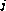

Common Lisp the Language, 2nd Edition

Collectors produce non-series outputs based on series inputs. They either
create a summary value based on some formula (the sum, for example) or collect the
elements of a series in an aggregate data structure (such as a list).
[Function]
collect-first items &optional (default nil)
collect-last items &optional (default nil)
collect-nth n items &optional (default nil)
Given a series items, these functions return the first element, the last element, and the nth element, respectively. If items has no elements (or no nth element), default is returned. If default is not specified, then nil is used for default.
(collect-first #Z() 'z) => z (collect-last #Z(a b c)) => c (collect-nth 1 #Z(a b c)) => b
[Function]
collect-length items
collect-length returns the number of elements in a series.
(collect-length #Z(a b c)) => 3
[Function]
collect-sum numbers &optional (type 'number)
collect-sum returns the sum of the elements in a series of numbers. The type is a type specifier that indicates the type of sum to be created. If type is not specified, then number is used for the type. If there are no elements in the input, a zero (of the appropriate type) is returned.
(collect-sum #Z(1.1 1.2 1.3)) => 3.6 (collect-sum #Z() 'complex) => #C(0 0)
[Function]
collect-max numbers
collect-min numbers
Given a series of non-complex numbers, these functions compute the maximum element and the minimum element, respectively. If there are no elements in the input, nil is returned.
(collect-max #Z(2 1 4 3)) => 4 (collect-min #Z(1.2 1.1 1.4 1.3)) => 1.1 (collect-min #Z()) => nil
[Function]
collect-and bools
collect-and returns the and of the elements in a series. As with the macro and, nil is returned if any element of bools is nil. Otherwise, the last element of bools is returned. The value t is returned if there are no elements in bools.
(collect-and #Z(a b c)) => c (collect-and #Z(a nil c)) => nil
[Function]
collect-or bools
collect-or returns the or of the elements in a series. As with the macro or, nil is returned if every element of bools is nil. Otherwise, the first non-null element of bools is returned. The value nil is returned if there are no elements in bools.
(collect-or #Z(nil b c)) => b (collect-or #Z()) => nil
[Function]
collect items
collect type items
collect returns a sequence containing the elements of the series items. The type is a type specifier indicating the type of sequence to be created. It must be either a proper subtype of sequence or the symbol bag. If type is omitted, it defaults to list. (This function exhibits an argument pattern that is unusual for Common Lisp: an ``optional'' argument preceding a required argument. This pattern cannot be expressed in the usual manner with &optional. It is indicated above by two definition lines, showing the two possible argument patterns.)
If the type is bag, a list is created with the elements in whatever order can be most efficiently obtained. Otherwise, the order of the elements in the sequence is the same as the order in items. If type specifies a length (that is, of a vector) this length must be greater than or equal to the length of items.
The nth element of items is placed in the nth slot of the sequence produced. Any unneeded slots are left in their initial state. Collecting is significantly more efficient if it can be determined at compile time whether type is a subtype of list or vector and for vectors what the length of the vector is.
(collect #Z(a b c)) => (a b c) (collect 'bag #Z(a b c)) => (c a b) or (b a c) or ... (collect '(vector integer 3) #Z(1 2 3)) => #(1 2 3)
[Function]
collect-append sequences
collect-append type sequences
Given a series of sequences, collect-append returns a new sequence by concatenating these sequences together in order. The type is a type specifier indicating the type of sequence created and must be a proper subtype of sequence. If type is omitted, it defaults to list. (This function exhibits an argument pattern that is unusual for Common Lisp: an ``optional'' argument preceding a required argument. This pattern cannot be expressed in the usual manner with &optional. It is indicated above by two definition lines, showing the two possible argument patterns.)
It must be possible for every element of every sequence in the input series to be an element of a sequence of type type. The result does not share any structure with the sequences in the input.
(collect-append #Z((a b) nil (c d))) => (a b c d)
(collect-append 'string #Z("a " "big " "cat")) => "a big cat"
[Function]
collect-nconc lists
collect-nconc nconcs the elements of the series lists together in order and returns the result. This is the same as collect-append except that the input must be a series of lists, the output is always a list, the concatenation is done rapidly by destructively modifying the input elements, and therefore the output shares all of its structure with the input elements.
[Function]
collect-alist keys values
collect-plist keys values
collect-hash keys values &key :test :size :rehash-size :rehash-threshold
Given a series of keys and a series of corresponding values, these functions return an association list, a property list, and a hash table, respectively. Following the order of the input, each keys-values pair is entered into the output so that it overrides all earlier associations. If one of the input series is longer than the other, the extra elements are ignored. The keyword arguments of collect-hash specify attributes of the hash table produced and have the same meanings as the arguments to make-hash-table.
(collect-alist #Z(a b c) #Z(1 2)) => ((b . 2) (a . 1)) (collect-plist #Z(a b c) #Z(1 2)) => (b 2 a 1) (collect-hash #Z() #Z(1 2) :test #'eq) => an empty hash table
[Function]
collect-file file-name items &optional (printer #'print)
This creates a file named file-name and writes the elements of the series items into it using the function printer. Printer must accept two inputs: an object and an output stream. (For instance, printer can be print, prin1, princ, pprint, write-char, write-string, or write-line.) If omitted, printer defaults to print. The value t is returned. The file is correctly closed, even if an abort occurs.
[Function]
collect-fn type init function &rest series-inputs
The higher-order function collect-fn supports the general concept of collecting. It is identical to collecting-fn except that it returns only the last element of each series computed. If there are no elements in these series, the values returned by init are passed on directly as the output of collect-fn.
(collect-fn 'integer #'(lambda () 0) #'+ #Z(1 2 3)) => 6 (collect-fn 'integer #'(lambda () 0) #'+ #Z()) => 0 (collect-fn 'integer #'(lambda () 1) #'* #Z(1 2 3 4 5)) => 120